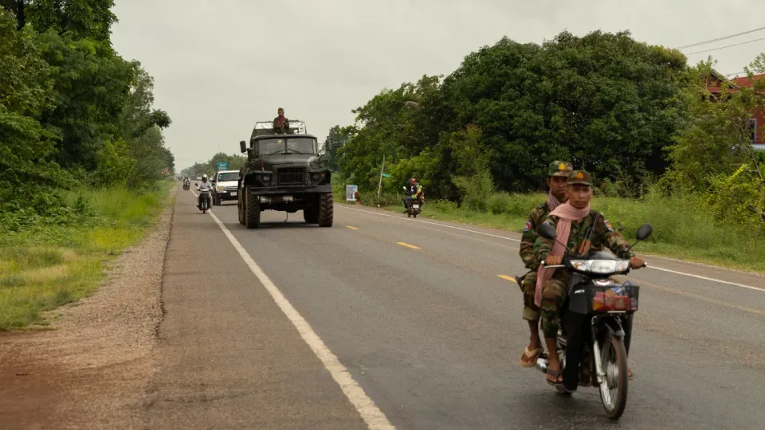

世界苦茶07月27日新闻 | 30条 | 台湾大罢免0:24遭遇重大挫败

台湾大罢免0:24遭遇重大挫败 | 泰柬冲突继续扩大 | 华北强降雨打破纪录 | 特朗普与爱泼斯坦AI照疯传
今日三条新闻分析
苦茶数据
美元兑人民币：7.16（昨日7.16，前日7.15）
美元兑日元：147.72（昨日147.42，前日146.07）
上证指数：休市（昨日3593，前日3595）
标普500指数：休市（昨日6388，前日6363）
比特币：118319（昨日117583，前日117216）
布伦特原油：68.44（昨日69.53，前日68.80）
中国新闻
• 华北强降雨破纪录 ：中国北方多地降雨破极值，极端性显著。据中新社报道，记者星期六从中国气象局获悉，7月23日以来，北方多地持续遭受强降水影响，内蒙古、河北北部、北京及太行山前区域成为强降水核心区。内蒙古、河北等地25日强降水天气持续，河北张家口、保定，内蒙古呼和浩特、乌兰察布、锡林郭勒、赤峰、通辽等地部分地区出现大暴雨，河北张家口康保、保定阜平出现特大暴雨。24日9时至25日8时，河北省保定市易县24小时降水量达362.6毫米，易县县城部分路段积水严重。
• 福宝争议持续中韩舆论战 ：人气熊猫“福宝”去年从韩国返回中国后，持续有中韩网民质疑“福宝被虐待”。中国大熊猫保护研究中心发布“严正声明”，指部分人员策动和操纵境内外舆论污名化大熊猫，疯狂网暴一线工作人员。在韩出生熊猫“福宝”去年4月返回中国后，韩国网络不断出现福宝颈部异常脱毛、额头有坑洞和“打黑工接客”等传言，网民因此质疑福宝在中国“被虐待”，一些福宝原韩国饲养员的中国粉丝也在社媒上附和。但也有中国网民认为，福宝回到中国后的吃住条件都优于韩国，认为虐待传闻是恶意造谣。双方争论持续至今。直属中国国家林业和草原局的熊猫中心，星期五在官方微博发布一篇倡议与严正声明文章，呼吁“守护熊猫净土，抵制网络暴力”。 （翻評：基本每年都有熊貓被虐待爭議，原因是網絡上真的有比較狂熱的熊貓粉絲群體，也是比較難理解的一群人。）
• 中国发布早期预警系统“妈祖” ：中国发布早期灾种预警方案，应对全球气候挑战。据中国气象局微信公众号消息，中国气象局星期六在上海举行的2025年世界人工智能大会开幕式上，正式发布全民早期预警中国方案“妈祖”，构建包含多灾种预警的全球早期预警服务网络，分享中国早期预警实践经验和技术成果。中国气象局将全民早期预警中国方案命名为“妈祖”，四个字母分别代表多灾种、预警、零差距和普惠。
• 中方提中巴深化反恐合作 ：中共中央军委副主席张又侠会见巴基斯坦陆军参谋长穆尼尔时说，愿与巴基斯坦加强反恐合作，希望巴方继续采取一切必要措施，保障在巴中国人员、项目和机构安全。据《解放军报》报道，张又侠星期五在北京会见访华的穆尼尔，他表示，中巴两军关系是两国关系的重要支柱，双方应坚决落实两国领导人达成的重要共识，加强战略沟通，密切交流交往，深化务实合作。张又侠说，中国将同巴基斯坦一道致力于地区和平与发展，构建新时代更加紧密的中巴命运共同体。
• 中方抗议台外长访日 ：针对台湾外交部长林佳龙访问日本，中国大陆外交部向日本政府表达强烈抗议。据大陆外交部官网消息，外交部亚洲司司长刘劲松星期五约谈日本驻华使馆首席公使横地晃，就台湾外交部长林佳龙访问日本一事进行严正交涉，提出强烈抗议。刘劲松称，台湾问题是中国核心利益中的核心，事关中日关系政治基础和两国间基本信义。日方纵容林佳龙以“私人身份”访问，为他从事反华分裂政治活动提供舞台，发出严重错误信号。
亚太印太新闻
• 台湾罢免案全数失败 ：台湾史上首次大罢免第一轮投票结果星期六揭晓，24位在野国民党立委和民众党籍新竹市长高虹安的罢免案全数未通过，对试图扭转朝小野大政治格局的总统赖清德造成重创。赖清德当晚在脸书发文说，尊重接受投票的结果。但他强调，这“不是某一方的胜利，也不是另一方的失败；罢免与反罢免，都是人民在宪政制度下拥有的正当权利”。在野国民党主席朱立伦和民众党主席黄国昌强烈要求赖清德站出来向人民道歉，学会对民意谦卑，停止撕裂社会。
• 曹兴诚称罢免失败因中共渗透 ：台湾大罢免开票中，24席国民党立委“不同意罢免”票数全数领先，罢免团体发起人曹兴诚认为，结果不如预期，是因为“中共对台湾长期渗透统战分化的程度，远大于我们的想像”。罢团“反共护台志工联盟”发起人、联电创办人曹兴诚星期六傍晚发声明说，这次罢免结果不如预期的一个主要原因，是“中共对台湾长期渗透、统战、分化的程度，远大于我们的想像”。至于其他原因，他认为，罢团在蓝大于绿的选区攻坚，所以当投票率高的情况下，志工的力量拼不过蓝营基本盘的动员。
• 赵少康亮票疑违法 ：台湾大罢免首轮投票星期六登场，资深媒体人赵少康在投票后主动亮票给媒体拍照，被质疑触法。台北市选委会回应称，此事正在调查中，并指案件将依涉嫌违反《选罢法》移送地检署处理。据台湾《联合报》报道，赵少康星期六现身台北市立大安国民中学投票所投票。他在投完票离开圈票区后，直接把票摊开给媒体拍照，直到走到投票箱前才把票对折投进去。由于赵少康上述举动可能违反选罢法，投开票所通报警方处理。台北市选委会说，目前案件由大安分局受理，并将移送台北地检署侦办。
• 金正恩誓言反美胜利 ：朝鲜领导人金正恩在朝鲜战争停战纪念日发表讲话说，朝鲜将会在“反帝、反美”的斗争中取得胜利。朝中社报道，金正恩星期六参观战争纪念馆时说：“坚信我们的国家和人民一定能完成富国强军的伟大事业，成为反帝反美对决中的光荣胜利者”。1953年7月27日，朝鲜与美国和中国签署停战协定，结束朝韩持续三年的战争。尽管该协议只是结束敌对行动、划定大致对等朝鲜半岛分界线，并未签署和平条约，但朝鲜将7月27日称为“胜利日”，认为这是战胜美国的象征。
• 特朗普促柬泰停火会谈 ：美国总统特朗普说，柬埔寨和泰国领导人已同意立即举行会面，以迅速达成停火协议。新华社报道，特朗普星期六在社交媒体发文说，他已分别与柬埔寨首相洪马内和泰国代首相蓬探通话，并警告若两国持续发生冲突，他将不会与任何一方达成贸易协议。特朗普说：“当一切尘埃落定，和平即将到来时，我期待与这两个国家达成贸易协议。”
• 柬埔寨否认炮击老挝 ：柬埔寨驳斥了泰国陆军第二军区社交媒体发布的一篇贴文内容，贴文称一些落在老挝领土上的炮弹由柬埔寨军队所发射。柬埔寨国防部发言人马莉淑洁达星期六在新闻发布会上说：“老挝当局还未对此事提出指控或展开调查，而泰方却提出指控。”柬埔寨军队“已发起反击，重点只针对泰国军事基地”。马莉淑洁达还驳斥了泰国媒体关于柬埔寨威胁使用远程火箭炮袭击泰国的报道。
• 老挝否认与柬军交火 ：老挝人民军消息人士透露，此前一些媒体宣称的“老挝人民军与柬埔寨武装人员交火”为不实消息。新华社引述老挝军方权威媒体《人民军报》说，并没有收到相关通报。此前有媒体报道说，老挝军方星期六发布紧急通报称，老挝军队与数名非法越境的柬埔寨武装人员爆发激烈交火，拘捕10人并缴获武器，并配有相关声明截图。但那一页截图实际为老挝占巴塞省军事特种作战部队25日签发的声明截图，主要内容显示“在7月24日至25日泰国和柬埔寨军队发生交火期间，有10枚炮弹落入老挝领土。目前尚不清楚是哪一方所发射”。 （翻評：兩個半中國兄弟國大亂鬥，這個真的是中國外交能力的又一次體現，調節能力為零。）
• 泰军向26国通报边境冲突 ：泰国陆军通过泰国驻外武官向26个国家发函，从泰方立场介绍泰柬边境局势。泰国军方下属第五电视台星期六报道，泰国陆军在信函中说柬方率先开火，攻击泰国平民、社区和医院等非军事目标，侵犯泰国主权，违反国际人道主义原则，柬方在泰国境内埋设杀伤人员地雷的行为严重违反《渥太华公约》。泰国陆军星期五召集外国驻泰武官，通报泰柬边境局势有关情况。
• 泰空军空袭柬军事目标 ：据泰国公共广播电台报道，泰国空军星期六派出两架F-16型战斗机和两架“鹰狮”战斗机袭击柬埔寨军事目标。据媒体报道，柬埔寨与泰国发生冲突期间，有炮弹落入老挝一侧、造成老挝民众房屋和财产损失一事，泰国指武器来自柬方，泰国对此深表遗憾。新华社引述陆军第二军区星期六在社交媒体上所发消息说，经核查并与老挝方面协调确认，这些炮弹并非来自泰国军队的武器，而是由柬埔寨军队所发射的。
• 泰柬冲突第三天百人伤亡 ：泰国和柬埔寨边境冲突7月26日进入第三天，冲突已造成上百人伤亡。泰国公共电视台称，柬埔寨5时10分许向达叻府的泰国部队开火，泰方反击，双方开始交火。泰国空军当天还出动战斗机打击柬军事目标。柬埔寨国防部指责泰国军队当天将军事袭击扩大到柬埔寨的菩萨省。冲突期间据报有10枚炮弹落入老挝境内，造成民众房屋受损。泰国陆军说，经核查并与老挝方面协调确认，这些炮弹由柬埔寨军队发射。柬埔寨国防部驳斥称，老挝当局还未对此事提出指控或展开调查。老挝人民军称其未与柬埔寨武装人员交火。联合国安理会就泰柬边境冲突召开紧急闭门会议，泰柬双方均提出通过和平手段解决争端。泰国敦促柬埔寨立即停止所有敌对和侵略行为，并恢复有诚意的对话。柬埔寨呼吁立即无条件停火，以和平方式解决与泰国的边境争端。
• 日本玄海核电站遭无人机入侵 ：当地时间26日晚9时许，位于日本佐贺县玄海町的玄海核电站发出“核物质防护情报”。截至目前尚未接到各机组设施运行异常的报告。日本原子力规制委员会表示，曾确认有三台无人机侵入核电站上空，目前未在厂区发现这些无人机，搜索工作仍在继续。此类情况“相当罕见”。目前，核电站设备未发现异常，无人机也未对核电站外部环境造成影响。
科技新闻
• 微软调查预警机制或泄密 ：美国科技巨头微软正调查公司的网络安全预警系统是否发生信息泄露，使中国黑客在公司修补漏洞前便已掌握并利用SharePoint服务中的安全缺陷，对全球企业和政府机构发动大规模网络攻击。彭博社星期六引述知情人士报道，预警系统旨在提前通知网络安全公司，协助尽早修复漏洞，但微软担忧，这一机制可能反被利用，成为导致近期全球范围内的系统漏洞被大规模攻击的源头。今年5月，越南网络安全公司Viettel的研究员科亚在柏林举行的会议上首次披露SharePoint出现的安全缺陷。
• 法团队研发精神病纳米抗体 ：法国研究人员参与的国际团队借助源自大羊驼的抗体，设计出一种可注射给药且副作用较少的新型纳米抗体，为治疗精神分裂症开辟新途径。新华社报道，法国国家科学研究中心日前发布公报说，现有精神分裂症治疗方法可以缓解某些症状，但对影响患者日常生活的认知障碍作用有限。这种新型纳米抗体能够特异性地激活参与调节神经元活动的谷氨酸受体，即大脑中与精神分裂症有关的关键受体，有望用于精神分裂症治疗。公报说，这个纳米抗体可通过静脉或肌肉注射等外周注射方式给药，而且可生物降解、副作用较少。药效已在两个动物模型中得到验证。注射抗体后，认知障碍小鼠的认知能力明显改善，且疗效持续超过一周。
• 特朗普与爱泼斯坦的AI假影像在社媒疯传： 研究人员周五说，社交平台充斥人工智能生成的假照片和视频，试图显示美国总统特朗普和性犯罪富豪爱泼斯坦与未成年少女交际的假影像在网络上疯传。特朗普目前遇上深度伪造合成影像疯传的情况。例如，一段广为流传的AI生成视频似乎显示特朗普和爱泼斯坦色迷迷地看着一群年轻女孩跳舞，背景音乐是英国乐队莎黛歌曲Is it a Crime。至少还有两张假照片似乎显示两人与未成年少女坐在沙发上。NewsGuard保守估计，至少有七张这类AI生成照片和一段视频在社交媒体平台上累计点击阅读量超过720万次。
财经新闻
• 香港上半年旅客增长12% ：香港特首李家超说，今年上半年约有2400万人次旅客访港，同比增加12%，将不断推陈出新打造香港成为首选旅游目的地。李家超星期六在脸书发文称，香港旅游业在今年上半年取得亮眼佳绩，共录得约2400万访港旅客人次，同比增加12%，其中中国大陆旅客约1780万人次，同比增加一成，非大陆旅客更较去年同期显着增加17%，录得584万人次。他认为，在与周边地区激烈竞争下，取得如此成绩实属不易，反映香港中西荟萃的旅游元素魅力，以及在国际旅游市场的吸引力不断增强。
• 中巴运河会谈促海运合作 ：巴拿马运河管理局高层与中国使馆代表举行会谈，就海运贸易合作等议题进行交流。巴拿马运河管理局星期五在官网发布消息称，中国驻巴拿马大使徐学渊率团对巴拿马运河管理局进行礼节性访问。双方就海运贸易合作、技术创新与可持续发展等共同关心议题展开友好交流。
• 特朗普苏格兰行拟签贸易协议 ：美国总统特朗普星期五到苏格兰进行四天访问，除了打高尔夫球，他还会出席双边会谈，并可能与欧盟达成贸易协议。路透社报道，特朗普在苏格兰告诉记者，他将参观自己在苏格兰的两个高尔夫球场，并与英国首相斯塔默和欧盟委员会主席冯德莱恩会面。特朗普说，他与斯塔默的会面更多是为了庆祝双方已达成的贸易协议，“这对双方来说都是一项伟大的协议”。
俄乌战争
• 泽连斯基寻欧援军人工资 ：乌克兰总统泽连斯基计划请求欧洲盟友出资，提高乌克兰部队的薪资，以缓解日益严重的新兵短缺问题。彭博社报道，泽连斯基星期四在基辅对记者说：“欧洲人此前拒绝为我们的军人薪资提供资金，只提供采购武器的资金。我们的军人就是保护所有人的武器。”乌克兰国内对征兵动员的支持度日益下降，民众对战争已感到疲惫。泽连斯基政府希望通过为签署军队合同的志愿军提供可观的报酬来激励更多人参军。
• 中美联合国交锋乌克兰问题 ：中美星期五在联合国就乌克兰问题激烈交锋；美方呼吁中国停止援助俄罗斯，中方则指责美国散布谎言、甩锅推责、制造对立。综合中国常驻联合国代表团网站和路透社报道，美国驻联合国代理大使谢伊在联合国安理会审议乌克兰问题时，敦促各国，尤其是中国，停止向俄罗斯出口军民两用物资。华盛顿指控，这类物资正被用于支撑俄罗斯的军工体系，协助它持续发动无人机与导弹袭击。
国际新闻
• 以色列宣布加沙暂时停火 ：以色列总理内坦亚胡决定，暂停在加沙地带的战斗一天。以军也称将恢复向加沙空投援助物资，并正在采取多项措施缓解人道危机。据以色列国有电视台Kan TV News报道，内坦亚胡星期六晚上，与国防部长卡茨、外交部长萨尔和其他高级官员磋商后，宣布在星期天停火，以回应国际社会对加沙局势的压力。以色列国防军也在星期六发声明说，当天将恢复向加沙地带空投人道主义援助物资，包括面粉、糖和罐头食品等。
• 特朗普访苏格兰惹抗议 ：美国总统特朗普访问英国苏格兰，大批民众走上街头抗议。新华社报道，特朗普星期五到访苏格兰，展开五天的访问。期间，他将与欧盟委员会主席冯德莱恩、英国首相斯塔默进行非正式会谈。星期六，特朗普到他名下的特恩贝里高尔夫球场打球，同时也前往位于阿伯丁郡的另一处高尔夫球场。
• 伊朗法院遭袭酿伤亡 ：伊朗东南部锡斯坦—俾路支斯坦省首府扎黑丹市司法机构遭袭击，已造成五人死亡、13人受伤。路透社引述伊朗媒体的报道说，逊尼派极端组织“俾路支军”星期六对伊朗东南部动荡的锡斯坦—俾路支斯坦省一座法院发动武装袭击。一名高级警官告诉伊朗国家通讯社，安全部队随后击毙三名袭击者。他说，枪手向锡斯坦—俾路支斯坦省首府扎黑丹的法院大楼投掷手榴弹，炸死一名妇女和一个孩童。
• 特朗普称不优先考虑加拿大谈判 ：美国总统特朗普说，与加拿大的贸易谈判目前不是他的优先考虑，他可能决定维持加拿大进口产品的关税税率不变。彭博社报道，特朗普星期五上午对记者说：“我们与加拿大的谈判一直不太顺利。”他说：“我看加拿大或许只能支付关税，不会与我们真正进行谈判。我们和加拿大还没有达成协议。我们不关注此事。”加元汇率对特朗普星期五的讲话反应平淡，与之前的情况类似。截至纽约时间星期五下午1时零6分，加元兑美元汇率跌0.6%，至1.3717加元兑1美元。
• 澳英签署AUKUS核潜艇条约 ：澳大利亚与英国签署合作条约，承诺未来50年强化“澳英美三边安全伙伴关系协议”核潜艇合作。AUKUS条约由澳大利亚、英国和美国于2021年达成，旨在未来十年向澳大利亚提供核动力攻击潜艇，以便在印度洋-太平洋地区抗衡中国。美国政府今年宣布将对这项条约进行正式审查。澳大利亚国防部长理查德·马尔斯发布声明说，他与英国国防部长约翰·希利星期六在维多利亚州吉朗市会晤后签署了这项条约。
• 特朗普盼维持核武条约上限 ：美国总统特朗普希望维持《新削减战略武器条约》中设定的美国与俄罗斯战略核武器部署上限。2010年签署的《新削减战略武器条约》（New START）将在2026年2月到期。路透社报道，特朗普星期五在离开白宫前往苏格兰时对记者说：“你不会希望这项条约截止。我们已开始着手处理这件事。”